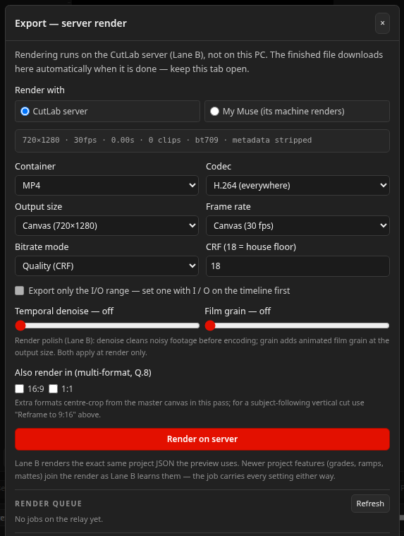

When you render with your own Muse, the render runs on your agent's machine with the official CutLab renderer. Our server hosts the editor, your account and your files. It never runs the job, and our worker is built to step around agent jobs without touching them.
Queue the job
- Finish the edit and open Export in the editor.
- Under Render with, choose My Muse (its machine renders).
- Queue the render. Your originals upload to your account space and the job waits there, marked as an agent job.
- In your Muse, say: Render my waiting CutLab job. Your Muse needs your connect token first.

What your Muse does
- Finds the waiting job through the connector and claims it. A claim holds the job for one hour, so two agents cannot collide on it.
- Downloads the project and every media file the job needs, using time-limited links.
- If it does not have the renderer yet, downloads it from the public package host and checks the version file for updates.
- Renders the exact project you sent. The package needs Python 3.10 or newer, ffmpeg and Pillow on that machine.
- Uploads the finished MP4 to the link the claim provided, then marks the job complete. The file appears in your render queue in the editor, ready to download.
Honest limits
- Speed is whatever the agent's machine gives you. A short render that takes minutes on our server takes similar minutes on a similar laptop. The gain is that the minutes are yours, and the queue is never shared.
- Your media still travels through relay storage on the way to the agent and the finished file travels back. The quota counts those files while they sit in your space.
- If a claim's hour runs out before the render finishes, the job can be claimed again. Ask your Muse to finish or fail the job through the connector rather than leaving it claimed.
- Only code-running agents can render. A plain chat connector can read your projects but has no machine to render on.
The agent brief your Muse follows is public, so you can read exactly what you are
authorising: AGENT-BRIEF.md on the package host, linked from
Connect your AI.